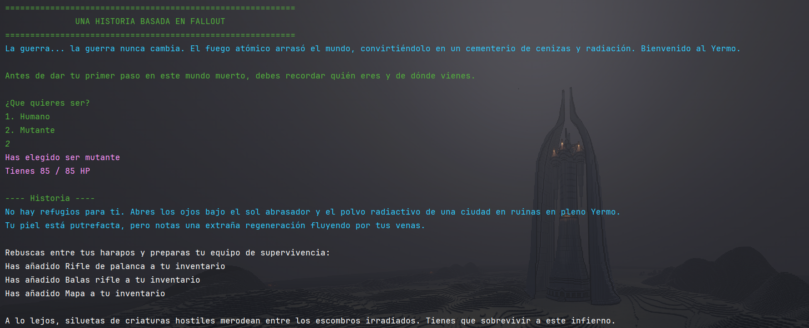

La guerra... la guerra nunca cambia. Tras el colapso atómico que redujo el mundo a cenizas en 2077, la humanidad intenta subsistir entre ruinas, mutaciones y tecnología olvidada.
Fallout: Ecos del Yermo es una aventura conversacional narrativa desarrollada íntegramente en Java para la consola de IntelliJ IDEA. En este juego,
cada decisión que tomas esculpe el destino de la región. Deberás controlar tu salud, gestionar recursos escasos y decidir en qué facción depositarás tu confianza.
Narrativa Ramificada por Nodos: Una estructura profunda de más de 14 escenas interconectadas que garantiza múltiples caminos, ramificaciones de facciones y finales alternativos.
Sistema de Inventario y Validación Dinámica: Gestiona de forma inteligente tus recursos. Objetos clave como el Fusion Core, los Cables de cobre o el Pip-Boy abren rutas exclusivas y desbloquean accesos que de otro modo estarían bloqueados.
Gestión de Supervivencia y Estadísticas: Controla tus Puntos de Vida (PV) —diferenciados según tu raza (Humano o Necrófago)— y vigila los niveles de radiación ambiental y el uso de consumibles médicos como estimulantes.
Minijuegos y Hackeo: Pon a prueba tu ingenio informático superando protocolos de seguridad y terminales mediante minijuegos de descifrado (estilo ahorcado) para saquear bases secretas.

Ambientación:Descubre la inspiración del proyecto basada en la saga Fallout y los dos puntos de partida de la aventura: la seguridad estéril del Búnker Vault-Tech (Humano) o las peligrosas ruinas del Yermo (Necrófago).
Items y combate:Consulta el listado detallado de armamento (Pistola chatarra, Rifle de palanca), objetos consumibles (Carne de rata-topo, Estimulantes) y los componentes clave de exploración.
Finales y Facciones: Analiza las tres grandes fuerzas en disputa -la Hermandad de Acero, la Legión de César y los Mercenarios Independientes— y descubre cómo tus decisiones en el Silo Omega conducen al Final Bueno, el Final Malo o el Final Neutral.
Módulos Implicados: Programación y Lenguajes de Marcas (1.ª Evaluación).
Ciclo Formativo: C.F.G.S. Desarrollo de Aplicaciones Multiplataforma (DAM).
Equipo de Desarrollo: Abel, Sebastián y Alejandro Rózpide.